첫날은 저녁에 도착해서 숙소 체크 인을 한 후에 카오산로드를 돌아다녔다. 우리는 거기서 제일 분위기가 좋은 바에서 칵테일을 마시고 다음날 파타야 바다로 이동을 위해 일찍 숙소로 돌아갔다.
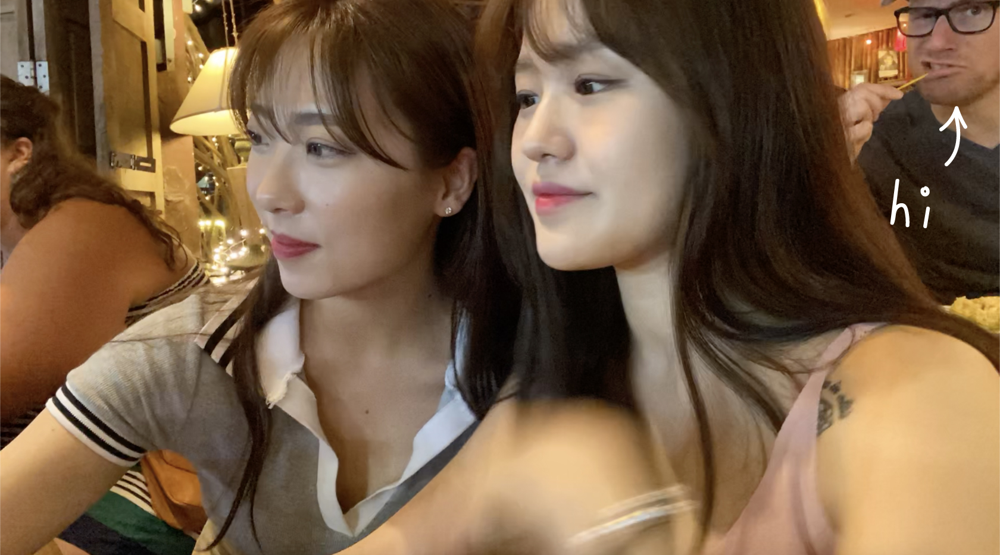
진주의 카오산 로드 여행 Tip
늦은 시간까지 활기찬 관광 거리라 여자 둘이서 돌아다녀도 위험하지는 않다. 하지만 사람이 많지 않고 인적이 드문곳은 위험하다. 여기도 캣콜링이 있기 때문에 꼭 무시하고 지나가야한다.
카오산 로드 인근에 있는 숙소는 카오산로드에 가까워질수록 좁고 비싸진다. 그러니 비용과 거리를 잘 생각해서 숙소를 잡는것을 추천.
Day2(Move to Pattaya)
파타야로 이동 > 식사 > 트렌스젠더 쇼 > 워킹스트리트 구경
Lunch
식사는 태국에 왔으니 태국음식 위주로 먹으려고 하였다.
태국식 돼지고기 볶음밥인 팟 카프라오, 태국식 볶음 쌀국수 팟타이, 그리고 땡모반. 개인적으로 이 레스토랑의 팟타이는 조금 싱거웠다.
진주의 태국음식 Tip
동남아 음식이 약간 입에 맞지 않을수도 있다. 하지만 과일을 좋아한다면 땡모반은 꼭 먹어야한다. 태국의 대표음식인 수박 생과일 주스인데 가격도 저렴하고 당도가 굉장히 높고 맛있다.
Transgender Show
촬영 불가라 사진을 찍을 수 없었다. 자극적이지만 재미있지는 않았다. 성인 남자와 여자 그리고 트렌스젠더 모두 나체로 공연을 하는데 다들 억지로 하는것 같은 표정에 심각하게 자극적이고 스토리가 없는 쇼였다. 다음에 태국을 간다면 전체연령가인 쇼를 보려고 한다.
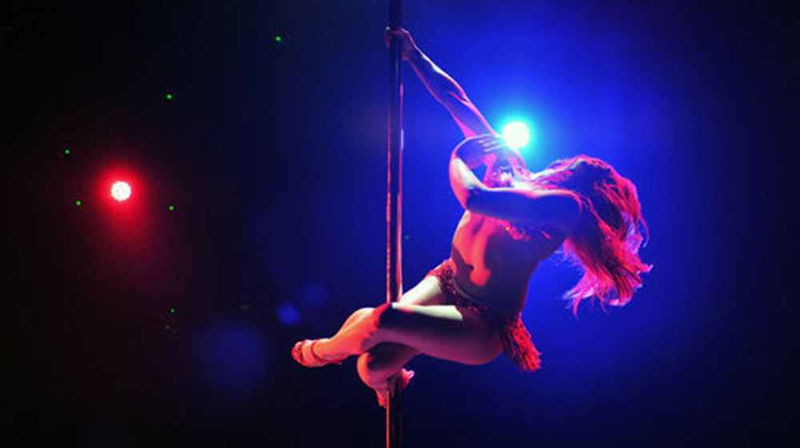
진주의 트렌스잰더 쇼 고르는 Tip
굉장히 자극적인것을 보고싶은게 아니라면 19세 이상만 볼 수 있는 쇼는 피해라.
쇼는 한국에서 여행사를 통해 미리 구입하고 가라. 현장결제는 훨씬 비싸다.
Walking Street in Pattaya
워킹스트리트는 내게 가히 충격적인 곳이었다. 야하게 입은 여성들이 클럽 앞에서 호객행위를 하고 술집 안에서는 복싱을 관전하고 있었다.
진주의 워킹스트리트 관광 Tip
워킹스트리트에서는 이런 광대들과 사진 찍는것도 돈을 내야 한다. 비싸지는 않으나 모르고 찍었는데 돈을 요구할 수 있으니 조심.
여기는 카오산로드와 차원이 다른 유흥거리다. 심각할 정도로 호객행위를 하니 마음먹고 갈 것.
Lobster pot 이 워킹스트리트 해산물 요리 맛집이다. 그중에 푸팟퐁커리라는 태국 요리는 나의 강력추천 메뉴. 태국에서도 저렴한 편은 하니지만 한국보다 저렴하니 꼭 먹어보길 추천한다.
Day3(Luxury yacht tour)
요트투어 > 휴식
Yacht tour
요트투어는 요트를 타고 파타야 바다로 나가서 즐기는 건데 총 3번의 자유시간을 준다. 자유 시간에는 바다수영이나, 스노클링, 낚시 등을 할 수 있는데 우리는 바다수영과 스노클링을 하였다. 바다는 티비에서나 보는 것 같은 에메랄드 빛 바다에, 엄청나게 많은 물고기들과 성게들이 있었다. 스노클링을 하면서 보는 바닷속은 장관이었지만, 크고 깊은 물속과 우리와 다르게 생긴 생명체들을 보며 대자연의 공포도 느낄 수 있었다.
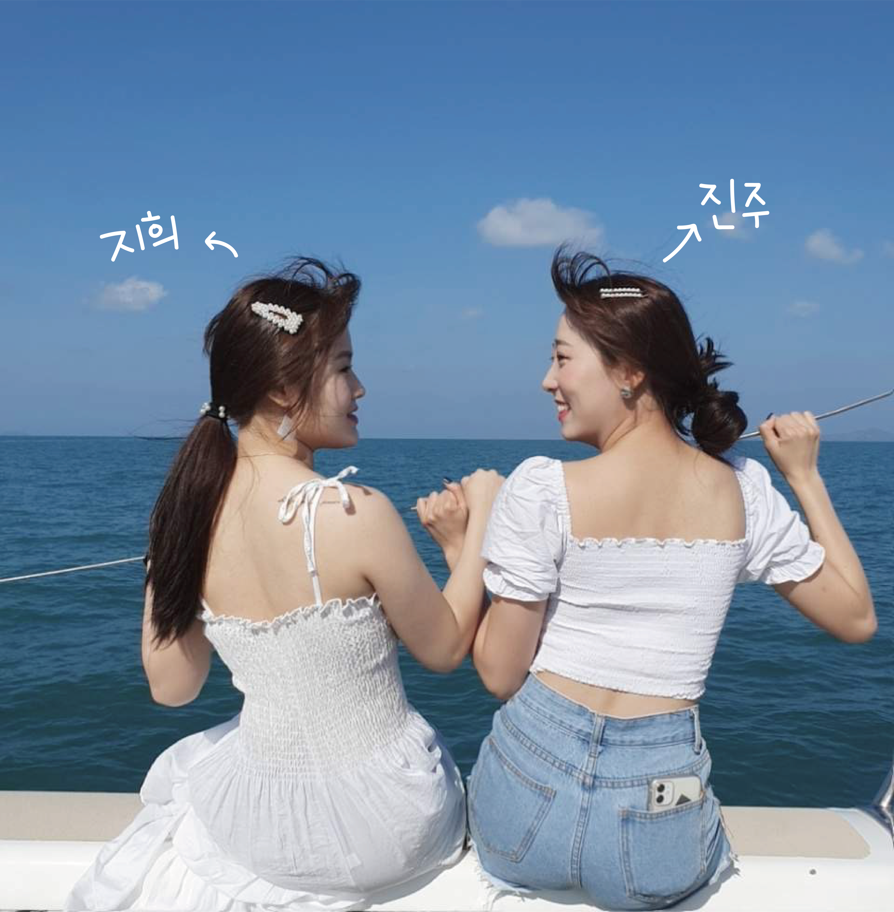
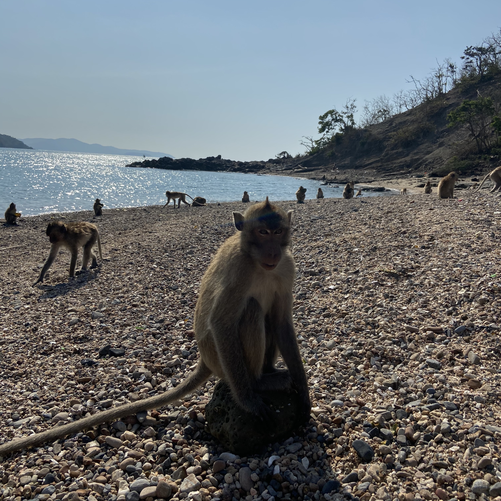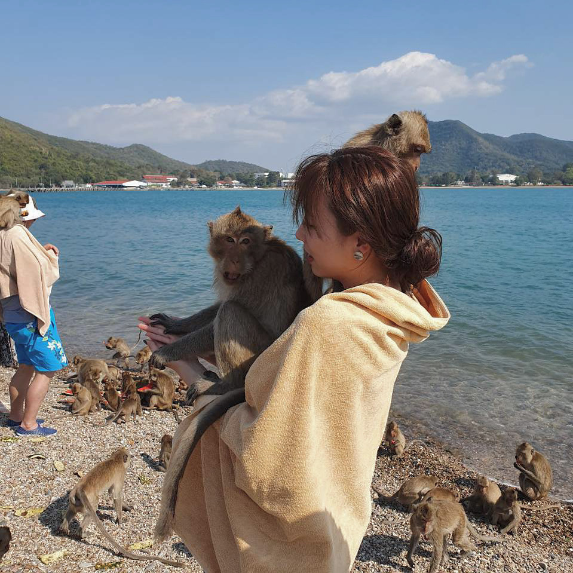
3번째 자유시간에는 원숭이 섬에 데려다 준다. 야생 원숭이들은 굉장히 사납고 먹이를 들고있는 사람에게 한꺼번에 5~6마리가 몰려든다. 야생 원숭이가 무서우면 요트에서 놀아도 된다.
진주의 요트투어 Tip
중국인은 중국인, 한국인은 한국인, 서양인은 서양인끼리 각기 다른 배에 타게 해주었다. 하지만 비율이 다르다면 중국인들과 같이 탈 수도 있다. 서양인 배에 탄 사람들은 주로 비키니를 입었지만 한국 사람들이 탄 배는 우리 빼고 모두 래쉬가드를 입었다. 우리만 비키니를 입어서 조금 민망… 스노클링 시 스노클링 장비를 빌리려면 호텔방 키나 500밧을 보증금으로 주어야 한다. 장비를 반납하면 다시 돌려받을 수 있으니 꼭 챙겨가야 한다. 원숭이들이 굉장히 사나우니 직원들의 말을 잘 들어야 한다. 말 안 듣고 독단적으로 행동 시 정말 진짜 진심으로 물릴 수 있다.
Dinner at the hotel
요트투어가 끝나고 호텔로 돌아와서 호텔 식당에 갔다. 저녁에도 태국음식을 도전해 보려고 똥얌꿍과 태국 오믈렛을 먹었다. 파스타는 그냥 까르보나라 파스타인데 너무 맛있어보여서 시켰다.
진주의 태국음식 Tip
향신료를 싫어해서 쌀국수도 못 먹는데 웬만한 태국 음식은 다 괜찮았다. 하지만 똥얌꿍은 정말 불호였다. 친구도 나도 한 입 먹고 더 이상은 입에 대지도 못했다. 호불호가 많이 갈리는 음식이라고 들었는데 향신료를 못먹는 사람이라면 안 시키는 게 나을 듯 하다. 돈이 아깝다..
Day4(Dinner Cruise)
방콕으로 돌아가서 체크인 숙소 체크인 > 디너크루즈
Last breakfast in Pattaya
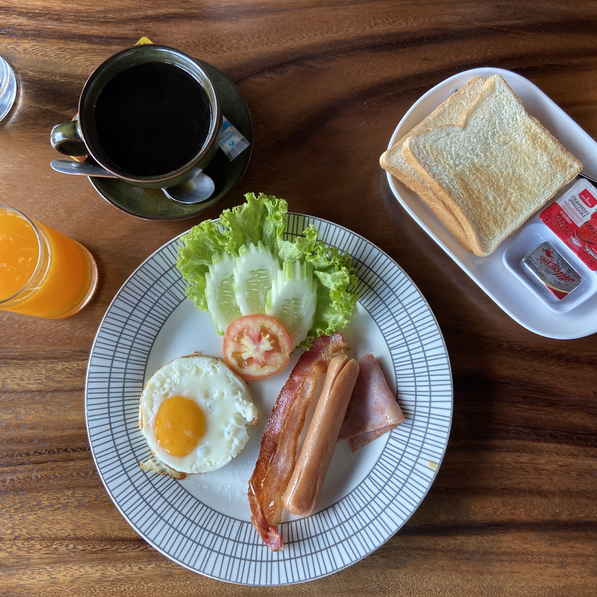
"Morning in Pattaya"
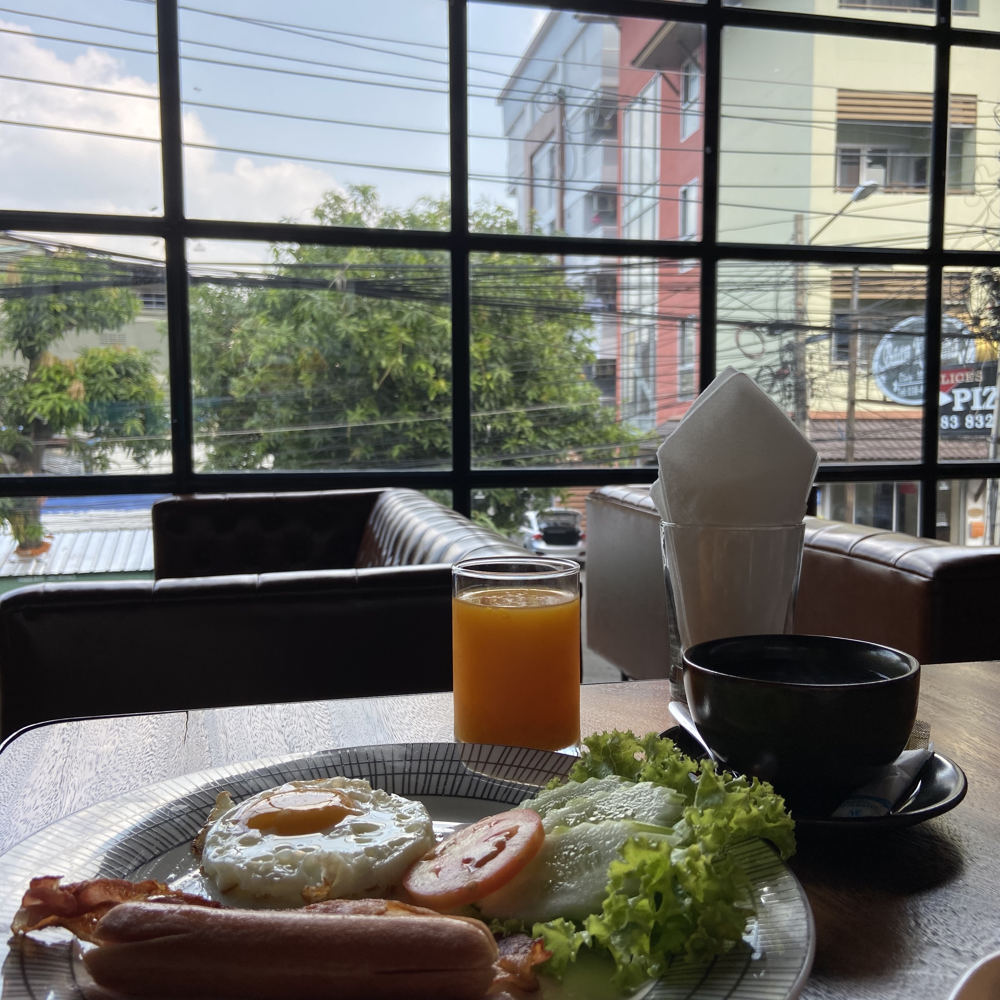
진주의 태국여행 Tip
파타야-방콕 버스 이동 시 배차시간이 약 1시간이며, 정확한 시간표가 없다. 여유를 가지고 이동하길 바란다. 터미널 화장실에 입장요금을 받는 곳도 있고 안 받는 곳도 있다. 휴지도 대부분이 없다. 개인 휴지를 가지고 다니는 것을 추천.
Dinner Cruise
이날 저녁에는 디너크루즈를 탔다. 원더풀 펄 디너크루즈라는 배를 탔는데 크루즈의 종류가 엄청 많았다. 우리는 무한도전에 나온 크루즈라고 해서 이 배를 선택했다. 조금 아쉬웠던 점은 이 배는 조용하고 느리며 중년층들이 더 선호할만한 크루즈라는 것이다. 더 신나고 속도감 있는 크루즈도 있었다.
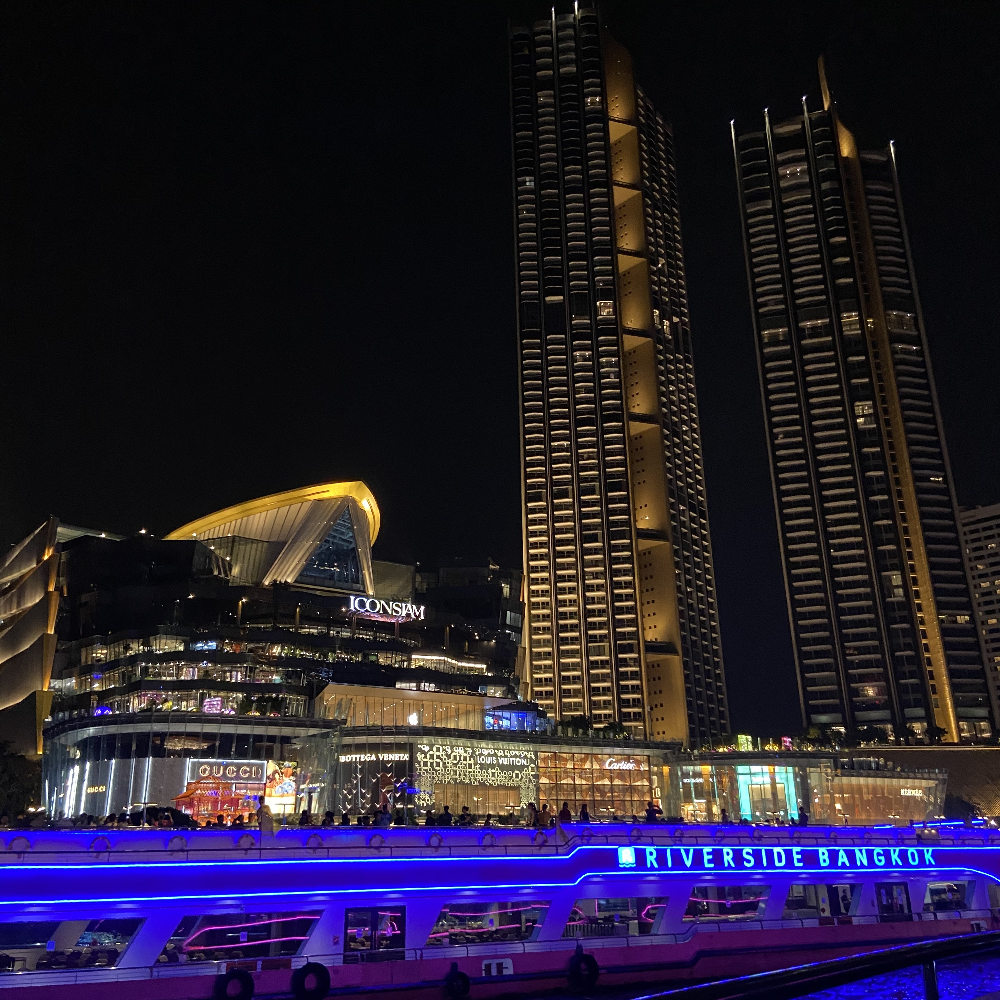
진주의 디너크루즈 선택 Tip
디너크루즈가 생각보다 종류가 많았다. 가족과 오붓하게 대화하며 시간을 보내고싶다면 조용하고 천천히 가는 크루즈를, 친구와 신나게 즐기며 야경을 보고싶다면 야외에서 공연을 하는 크루즈를 잘 알아보고 티켓을 구입하길 바란다.
Day5(Enjoy Bangkok)
현지 음식 먹기 > 현지 카페 가기 > 오리엔탈 호텔 재즈바 가기
Beef Soup with noodle
이날은 특별한 스케줄 없이 숙소 근처에서 여유롭게 즐기기로 했다. 숙소는 카오산로드 근처였는데, 갈비국수가 유명하다고해서 갈비국수를 먹으러 갔다. 태국에 가면 꼭 먹어봐야하는 음식이라고 해서 먹었는데 생각보다 익숙한 맛이었다. 정말 갈비국에 국수를 넣은 맛이었다. 개인적으로 끈적국수가 더 특이하고 맛있었다.
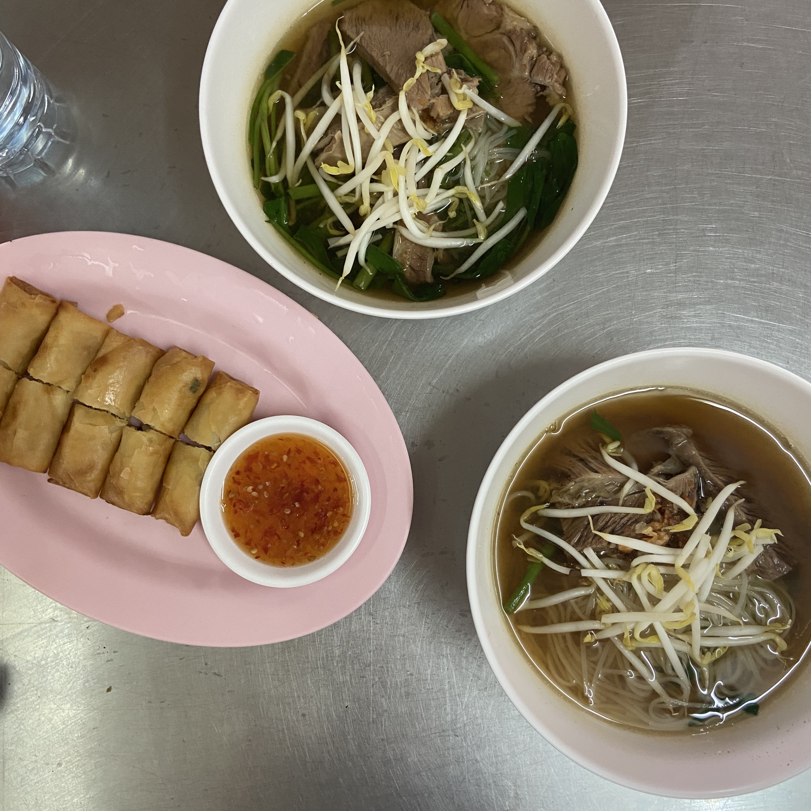
진주의 태국음식 Tip
태국음식이 입에 맞다면 끈적국수나 갈비국수 둘다 먹어보기. 시간이 안된다면 둘 중 하나는 꼭 먹어보기. 색다르고 특이한 걸 먹어보고 싶다면 끈적국수를 추천.
Cafe Amazon
갈비국수를 먹고나서 아마존이란 이름의 카페에 갔다. 스타벅스는 공항에서나 볼 수 있었고 카페 아마존은 여기저기서 볼 수 있었기 때문에 카페 아마존을 가보기로 하였다. 브랜드 색상도 그렇고 스타벅스를 많이 연상케 한다. 하지만 저렴하고 양도 많아서 좋았다. 커피를 시켜놓고 여기서 하루 반나절은 수다를 떤 것 같다. 이 때가 여행하는 동안 제일 여유로운 시간이었다.
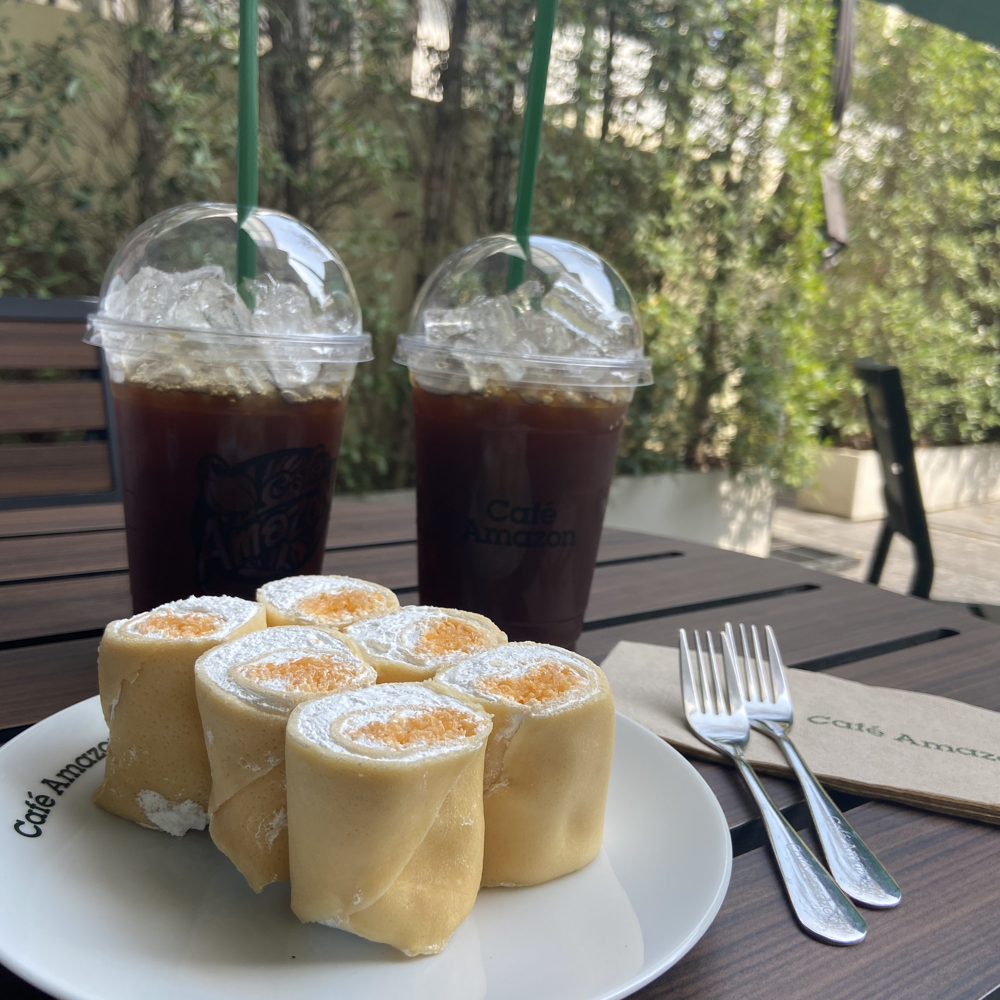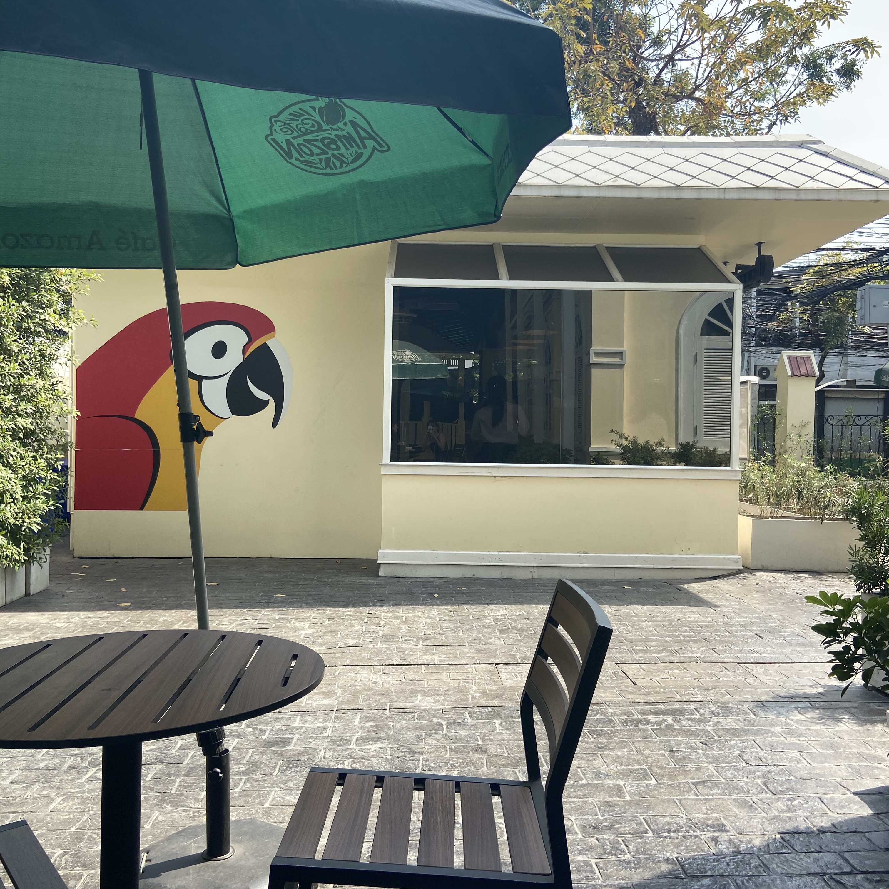
진주의 태국음식 Tip
카페 아마존은 태국 브랜드라고 한다. 꼭 한번 들러보길
Jazz Bar in Mandarin Oriental Hotel
오리엔탈 호텔의 재즈 바는 고급스러운 바였고, (방콕 3대 재즈 바 라고한다) 음료를 마시며 재즈 공연을 볼 수 있다. 이날은 태국 ATM이 우리의 카드를 삼킨 관계로 카드로 결제했다. 수수료...
이날은 서양인들이 주 고객이었고 동양인들은 거의 없었다. 화장실은 재즈 바 밖 호텔 화장실을 이용해야 했는데 화장실 문앞까지 직원이 데려다 주었다. 화장실 가는동안 영어로 직원과 스몰 톡을 했는데, 그래도 화장실 문앞까지 데려다주는건 너무 부담스러웠다. 제말 그 말을 멈춰줘..
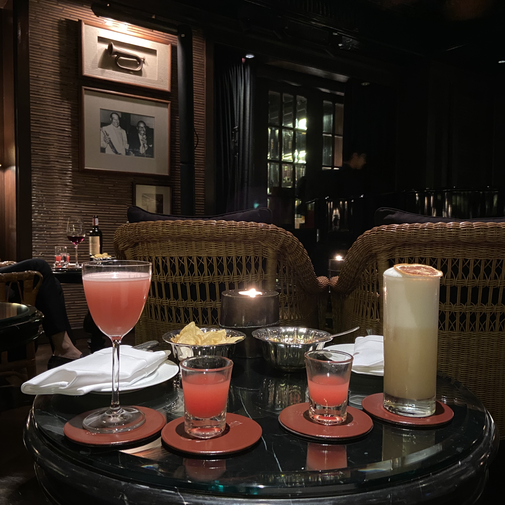
진주의 태국여행 Tip
태국 ATP기기는 3번 이상 거래에 실패하면 카드를 돌려주지 않으니 현금을 충분히 챙겨가거나 ATM 기기를 능숙하게 다룰줄 알아야 한다.
재즈바에서 직원이 화장실까지 데려다 주더라도 익숙한 것처럼 행동하기. 느낌 아니까^^
Day6(Go Chatuchak Market)
Chatuchak Weekend Market
친구와 태국에서 가장 유명한 주말시장을 갔다. 새로 오픈한 가게에서 망고밥을 샘플로 나누어주었는데 의외로 굉장히 맛있었다. 다음에 짜뚜짝시장을 가게 되면 유명해져있을까?
나는 내 방에 놓을 캔들 홀더를 샀다. 종류가 많았는데 나뭇잎이 양각으로 새겨진 홀더를 골랐다. 지금은 내방 침대 옆 협탁에 예쁘게 올려져있다. 짜뚜짝시장에서는 절대 상인이 부르는 가격에 사면 안된다! 흥정이 가능하다. 사실 내가 싸게 사는지 잘 모르겠지만 그래도 최소 50밧(THB)은 깎고 본다.
진주의 짜뚜짝시장 구경 Tip
정말 너무 저렴한것 아니라면 흥정을 하자. 양산과 물을 꼭 들고가길. 정말 덥고 시장이 넓다. 시장 규모가 정말 크기 때문에 시장을 많이 보고싶다면 이날 다른 스케줄은 잡지 않는게 좋다.
Day7(Arrival)
여름방학때 알바하며 모은 돈으로 겨울방학에 여행을 다녀오니 여름방학에 고생했던게 보상받는 느낌이었다. 출국할 때까지만 해도 코로나가 이렇게 퍼질지 몰랐는데 입국하고 나니, 인천공항의 거의 모든 사람들이 마스크를 쓰고 있었다.
진주의 마지막 태국여행 Tip
방콕의 수질상태가 비위생적이여서 꼭 생수를 사먹는것을 추천한다. 길거리 음식을 많이 파는데 날씨가 덥기 때문에 금방 상할 수 있어서 나는 잘 먹지않았다. 태국은 물로 뒷처리를 많이 한다고 한다. 변기 옆에 조그마한 샤워기같은게 배치되어있다. 꼭 개인휴지를 들고 다니자. 머리를 함부로 쓰다듬으면 안된다고한다. 사람 머리에 혼이 깃들어 있기 때문이라고 생각한다고한다. 왕실 모독행위는 절대 금지이다. 태국 여행중에는 국왕 등 왕실 사람들의 사진을 곳곳에서 볼 수 있다. 여기서는 왕실을 모독한다면 왕실모독죄로 잡혀갈 수도 있다고 한다.